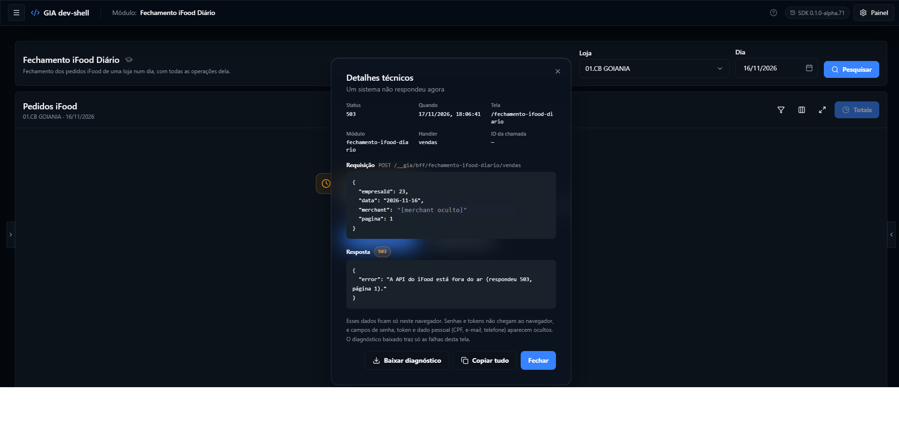

/sales) · Fechamento iFood Diário| Quando | 17/11/2026, 18:06:41 |
| Pesquisa | Loja 01.CB GOIANIA · dia 16/11/2026 |
| Chamada | POST /__gia/bff/fechamento-ifood-diario/vendas · página 1 |
| Resposta | 503 — “A API do iFood está fora do ar (respondeu 503, página 1).” |
O módulo só repassou o que o iFood respondeu: a tela mostra “Um sistema não respondeu agora”.
